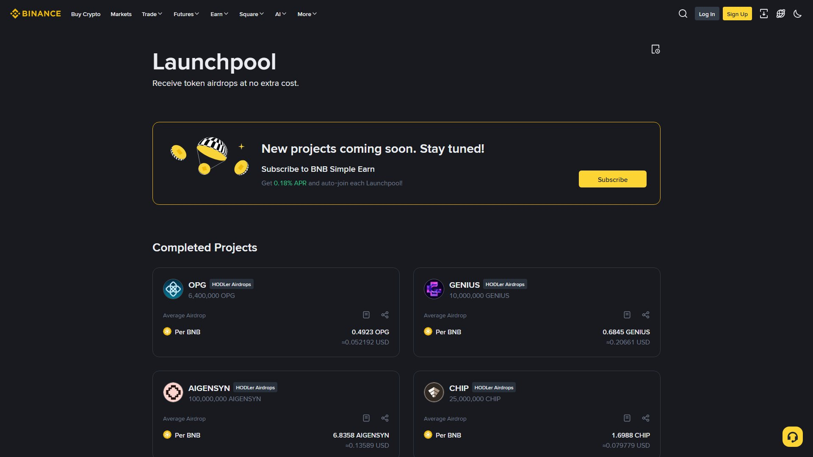

Launchpad بائننس کا وہ پروگرام ہے جس کے ذریعے نئے کرپٹو پروجیکٹ اپنے ٹوکن کی پہلی پیشکش کرتے ہیں (IEO — Initial Exchange Offering)۔ Launchpool اس سے الگ چیز ہے: آپ اپنے کوائنز رکھ کر نئے پروجیکٹ کے ٹوکن مفت فارم (فارمنگ) کرتے ہیں۔

IEO = "Initial Exchange Offering" — یعنی نئی کرپٹو کی قدیم (ICO) میں بائننس خود درمیان آتا ہے۔
1. Launchpad صفحہ کھولیں
2. کسی فعال پروجیکٹ کی تفصیل دیکھیں (قیمت، شیڈول، حد)
3. "Subscribe" پر کلک کریں
4. Launchpad کا Section + BNB (یا متعلقہ) مختص کریں
5. تصدیق → Allocation (تقسیم) کے نتائج کا انتظار
6. لسٹنگ کے بعد کوائن آپ کے والٹ میں| ICO | IEO |
|---|---|
| پروجیکٹ خود جمع کرتا ہے | بائننس درمیان میں |
| کم جاँچ | بائننس کی جانچ (Vetting) |
| خطرہ زیادہ | خطرہ کم، مگر صفر نہیں |
Launchpool میں آپ فنڈز نہیں خریدتے — بس اپنے کوائنز (مثلاً BNB، FDUSD) ایک مقررہ مدت کے لیے "اسٹیک" کر کے نئے ٹوکن کے لیئے فارم کرتے ہیں۔
Launchpool → Pool منتخب کریں → کوائن اسٹیک کریں
→ روزانہ نئے ٹوکن کی تقسیم (کل پول کے تناسب سے)
→ ٹوکنز لسٹ ہونے پر تجارت کے قابل💡 فرق یاد رکھیں:
- Launchpad/IEO = جدید قیمت پر خریدنا
- Launchpool = کوائنز رکھ کر منافع کمانا
- Megadrop = Web3 ٹاسک + BNB لاک سے ایوارڈ
- HODLer Airdrop = مخصوص مدت تک BNB رکھنے پر ایوارڈ
مثال (صرف سمجھنے کے لیے):
شیڈول: 3 دن
حد: 1 شخص کے لیے زیادہ سے زیادہ $____
یہاں تصدیق 24-48 گھنٹے
نتائج: Allocation (تناسب کے حساب سے)
آمدنی: آپ کا حصہ = (آپ کا سٹیک ÷ کل سٹیک) × کل سیل ٹوکن⚠️ توقع سے زیادہ تقاضا ہو تو Over-subscription: تناسب کے حساب سے صرف کچھ حصہ ملتا ہے۔
| فائدہ | وضاحت |
|---|---|
| بائننس کی جانچ | پروجیکٹ کی پہلے سکریننگ |
| قیمت | عام بولیاں لگنے کے بجائے سیل قیمت |
| مفت فارمنگ (Launchpool) | بغیر خرید منافع کا امکان |
| لوریج نہیں | Spot ماڈل، لیکویڈیشن کا خطرہ نہیں |
⚠️ توقع نہ کریں کہ لسٹنگ کے بعد قیمت لازماً بڑھے گی — IEO کی قیمت بھی گر سکتی ہے۔
نئی منڈی = نیا موقع + نیا خطرہ، اور یہ دونوں بیک وقت حقیقی ہیں۔ Launchpad بائننس کی جانچ کی وجہ سے ICO سے بہتر ہے، مگر کوئی ٹوکن "بائننس پر ہونے" کی وجہ سے محفوظ نہیں بن جاتا۔
یاد رکھیں: "جو ٹوکن آپ کو قسم دلا رہا ہے، اُس سے سنا نہیں، دیکھنا پڑے گا" — صرف اضافی رقم، صرف اضافی جوش۔